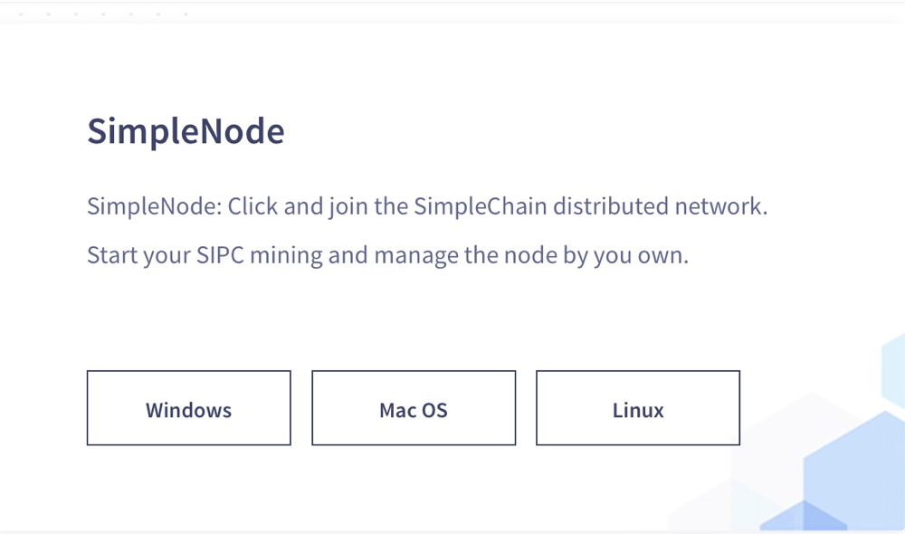
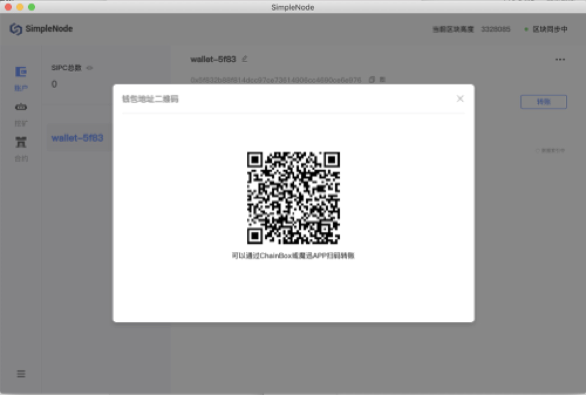
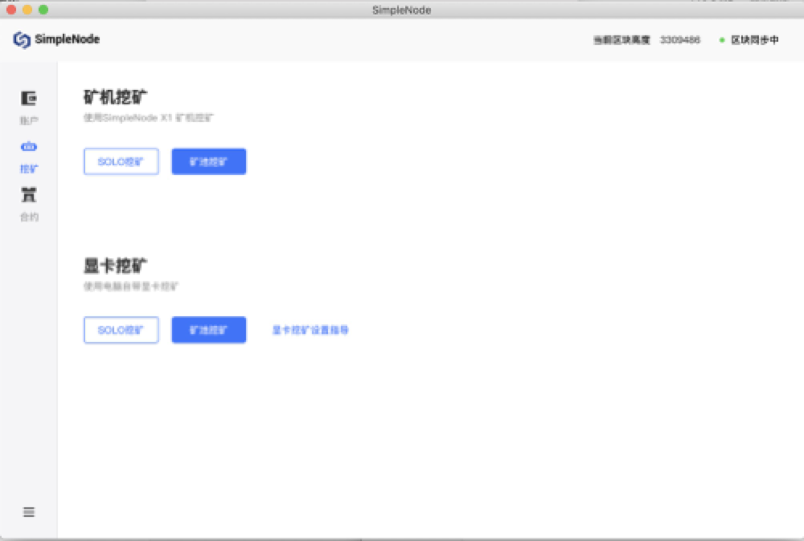
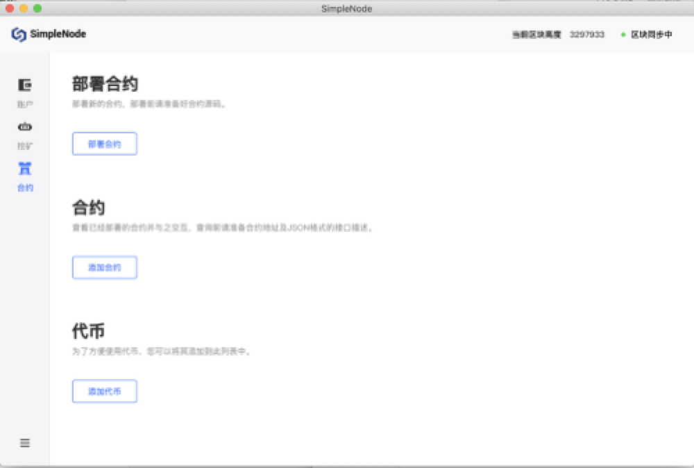

Docker image building
Obtain an image：
docker pull simplechain/sipe:latest
Start node:
docker run -it -p 30312:30312 simplechain/sipe
Enable RPC:
docker run -it -p 8545:8545 -p 30312:30312 simplechain/sipe --rpc --rpcaddr "0.0.0.0"
Enable the JavaScript console:
docker run -it -p 30303:30303 simplechain/sipe console
Store block data in a specified directory:
docker run -it -p 30312:30312 -v /path/on/host:/root/.simplechain simplechain/sipe
If RPC is enabled, you can run the following command to check whether your node is successfully started:
curl -X POST localhost:8545 -H "Content-Type:application/json" --data '{"jsonrpc":"2.0","method":"web3_clientVersion","params":[],"id":68}'
Installation package construction
Open theofficial websiteof Simplechain and drop down to find the SimpleNode module, as shown in the following figure:

Download the corresponding version according to your server system. After downloading, follow the prompts to install it. After installation, create a wallet account by using the credential. Then you can pay or receive sipc, mining, and publish contracts.
Account：

Mining

Contract

Source code construction
Preliminary preparations: Go language environment (1.10 or higher), C language compiler
1.Download SimpleChain
You can clone a project locally through git or https://github.com/simplechain-org/go- Download directly from the simplechain page.
git clone https://github.com/simplechain-org/go-simplechain.git
2.Install sipe
1.Enter the go-simplechain root directory.
cd go-simplechain
2.Use the make tool to install sipe.
make sipe
>>> /usr/local/go/bin/go install -ldflags -X main.gitCommit=9d73f67e1dc5587a95f52c13fee93be6434b42ac -s -v ./cmd/sipe github.com/simplechain-org/go-simplechain/core
...
github.com/simplechain-org/go-simplechain/cmd/sipe
Done building.
Run "/Users/yuanchao/go/src/github.com/simplechain-org/go-simplechain/build/bin/sipe" to launch sipe.
When the above output appears on the terminal, the make execution is successful. In this case, the sipe executable file is generated in the go-simplechain/build/bin directory. You can move it to any directory or add it to environment variables to facilitate the running of sipe programs.
Start sipe
1.Create a folder for storing node data：
mkdir chaindata
2.Start the sipe Master network node
Enable the RPC service and specify the RPC listening address as 127.0.0.1, Port 8545. The node data storage directory is chaindata
./sipe --rpc --rpcaddr 127.0.0.1 --rpcport 8545 --datadir chaindata
When an output similar to the following appears, the startup is successful and the SimpleChain master Network block is synchronized.
INFO [06-19|09:35:01.481] Maximum peer count ETH=25 LES=0 total=25
INFO [06-19|09:35:01.492] Starting peer-to-peer node instance=Sipe/v1.0.2-stable-0cbf2a41/darwin-amd64/go1.12.1
...
INFO [06-19|09:35:33.700] Block synchronisation started
INFO [06-19|09:35:36.756] Imported new block headers count=192\
elapsed=22.273ms number=192 hash=bb758a...bea1b6 ignored=0
3.Start the sipe console
Create a new terminal window and run the following command to open an interaction console connected to this node.
sipe attach chaindata/sipe.ipc
4.Create an account
Use the following command to create an account in the started console.
> personal.newAccount()
Passphrase:
Repeat passphrase: "0xc8d8ba3bdba3a1e3ca1d6cd48106d84036f6c0bd" //account address
After the account is created, the console returns the account address and generates a json file for the account in chaindata/keystore. This file can obtain the account private key through password parsing.
5.Enable mining
Restart the sipe node，enable mining, and specify the miner address as the account address you created. The number of mining Threads is 1.
sipe --rpc --rpcaddr 127.0.0.1 --rpcport 8545 --datadir chaindata --mine --minerthreads=1 --etherbase=0xc8d8ba3bdba3a1e3ca1d6cd48106d84036f6c0bd
You can also specify the miner address and enable mining in the console.
> miner.setEtherbase('0xc8d8ba3bdba3a1e3ca1d6cd48106d84036f6c0bd')
> miner.start()